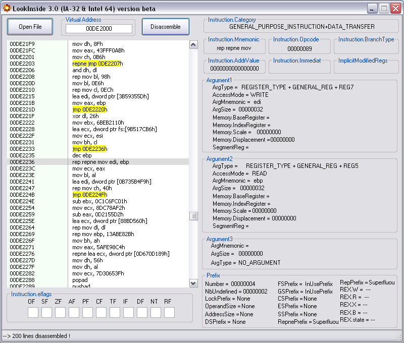
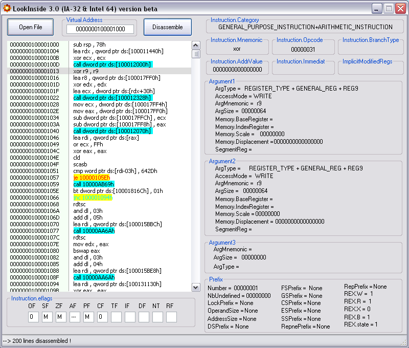
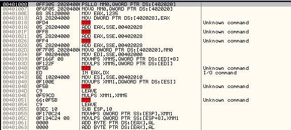
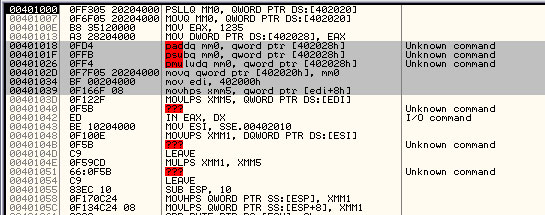
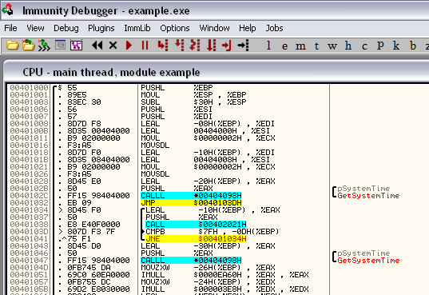

Screenshots
Voici quelques résultats obtenus à l'aide de BeaEngine utilisée avec LookInside ou le plugin IDA.
BeaEngine pour 32 bits
Voici un premier exemple de désassemblage d'un binaire 32 bits. LookInside utilise les fonctionnalités de BeaEngine pour coloriser les BranchInstruction à la OllyDebugger. On peut même faire la différence entre les Jcc et les Jncc ! BeaEngine permet également d'exploiter l'adresse renvoyée par un saut afin d'afficher une petite flèche par exemple.

BeaEngine pour 64 bits
Ce second exemple concerne un désassemblage d'un binaire 64 bits. BeaEngine permet de faire le même travail que pour le 32 bits. On remarque que BeaEngine travaille dans ce cas sur des adresses de 64 bits bien évidemment !

Plugin OllyDbg 1.10 et Immunity Debugger 1.xx : FullDisasm.
Ce plugin permet à OllyDbg 1.10 de changer de moteur de désassemblage et d'utiliser BeaEngine 3.0 pour reconnaitre les instructions récentes.Voyez plutôt l'exemple ci-dessous et comparez les deux désassemblages obtenus.

Avec FullDisasm (Ctrl+W) :

Avec FullDisasm (Ctrl+X) :

Ce plugin permet également plus de fantaisies. On peut par exemple afficher les instructions en utilisant la syntaxe GNU Assembler :
